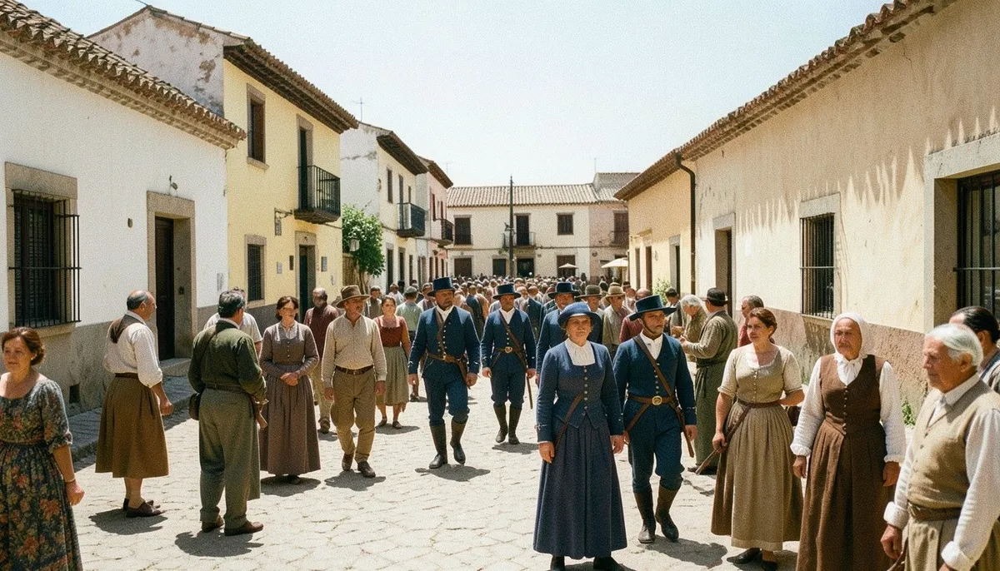
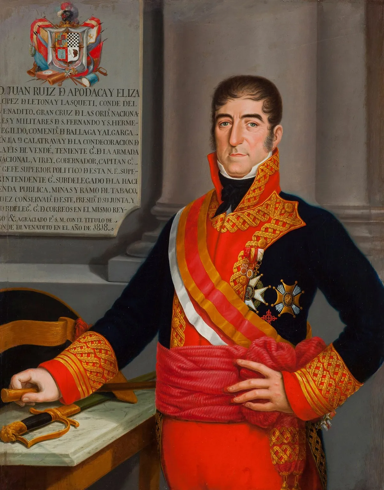
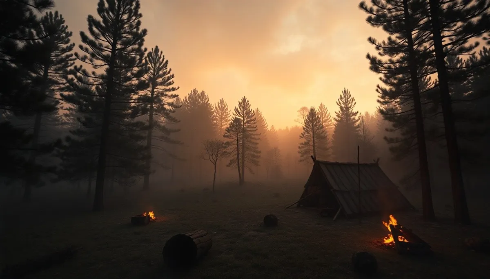
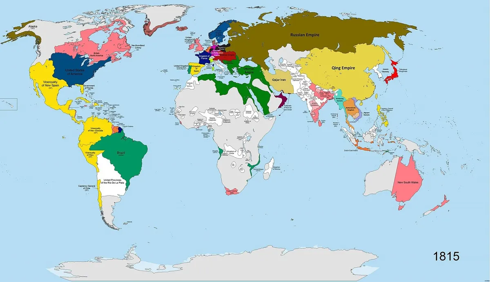
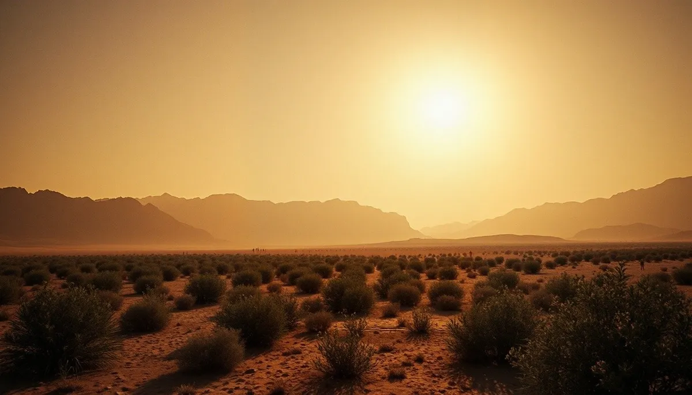
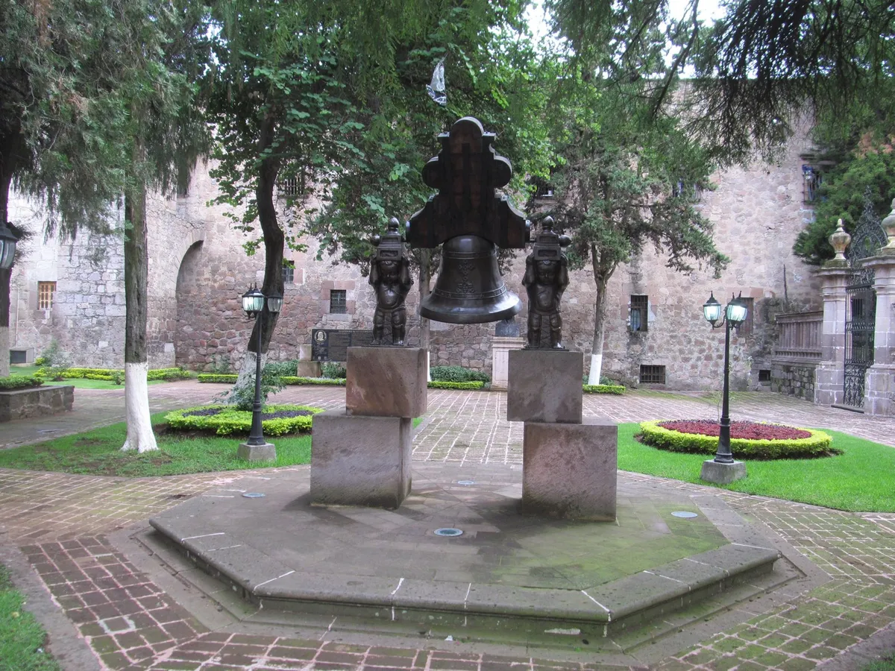
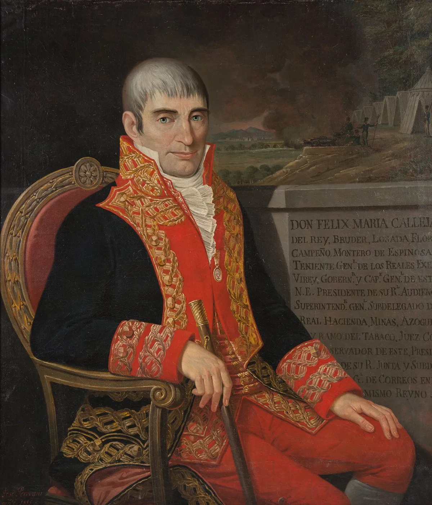

OKpolítico
OKpolíticoHistoria
Esta sección está disponible para tu marca →
1818 (III): El Laberinto de la Resistencia
En este cierre del año 1818, exploramos la paradoja de la 'pacificación' novohispana. Mientras el virrey Juan Ruiz de Apodaca reporta victorias administrativas, Vicente G
4 de noviembre de 2026
1818 (II): La Resistencia Suriana y el Cerco Realista
En la segunda parte del año 1818, exploramos los meses de mayo a agosto, un periodo crucial donde la apariencia de paz en la Nueva España chocó contra la tenaz resistencia insurgen
1 de noviembre de 2026
1818 (I): La Aparente Pacificación y la Sombra de la Paciencia
Episodio 23 de 'Historia política de México, año por año'. Analizamos el primer cuatrimestre de 1818: la aparente calma celebrada por el virrey Juan Ruiz de Apodaca tras
31 de octubre de 2026
1817 (III): La Muerte de Mina, el Exilio de Mier y la Resistencia que No Cede
En esta tercera y última parte de 1817, narramos el desenlace de la expedición de Mina: la sorpresa en el Venadito, la muerte de Pedro Moreno y el fusilamiento de Mina en noviembre
30 de octubre de 2026
1817 (II): Mina, Arredondo y la resistencia del sur
En este episodio (parte 2), exploramos la travesía de la expedición liberal de Francisco Xavier Mina, la respuesta militar del virrey Apodaca y sus generales Arredondo y Liñán, y l
29 de octubre de 20261817 (I): La Aparente Calma y la Tormenta que Cruza el Mar
Episodio 20 de la serie 'Historia política de México, año por año'. Durante los primeros cuatro meses de 1817, la política de indultos del virrey Apodaca y los triunfos m
28 de octubre de 2026
1816: El Indulto y la Tormenta que Viene
En esta tercera y última parte de 1816, exploramos la llegada del Virrey Juan José Ruiz de Apodaca a la Nueva España. Analizamos cómo su política de indultos cambió el curso de la
27 de octubre de 2026
1816 (II): El Desmantelamiento de la Nueva España
En la segunda parte del año 1816, la Nueva España experimenta una severa crisis institucional y económica. Pese a los partes de victoria tras la captura de Morelos, el virreinato e
26 de octubre de 2026
1816: La Resistencia Huérfana
Episodio 17 de la serie Historia política de México (1816, Parte 1 de 3: enero a abril). Tras el fusilamiento de José María Morelos en Ecatepec, la Corona creyó consumada la pacifi
25 de octubre de 2026
1815 (III): El Ocaso del Rayo
En este cierre de 1815, narramos los meses finales de José María Morelos y Pavón. Desde la desesperada travesía para proteger al Supremo Congreso hasta el cerco fatal en Temalaca.
24 de octubre de 2026
1815 (II): El Ley Orgánica y la Red de Traiciones
Episodio 15 (Parte 2 de 3) de 'Historia política de México, año por año'. Analizamos los meses de mayo a agosto de 1815: la ofensiva legal del virrey Calleja contra la Co
24 de octubre de 20261815: El cerco del Congreso y la misión a EE. UU. (May-Ago)
Explora los acontecimientos de mayo a agosto de 1815 en la Nueva España: la actividad legislativa del Congreso insurgente, las tensiones entre mandos militares, la fallida misión d
22 de octubre de 2026
1815: El Congreso Errante y el Ocaso de Napoleón
Exploramos los meses críticos de mayo a agosto de 1815. Mientras Europa restaura el absolutismo tras la caída de Napoleón, en México el Congreso insurgente lucha por sobrevivir en
22 de octubre de 2026
1815: El Dilema de la Legitimidad
En este episodio de 'Historia política de México', analizamos el primer cuatrimestre de 1815, un periodo crítico donde la insurgencia intentó pasar de la guerrilla a la i
21 de octubre de 2026
1814 (III): La Ley de Apatzingán y el Puño Real
Episodio 13: La Constitución de Apatzingán. Analizamos la creación de la primera carta magna republicana de México en 1814 bajo el asedio de Calleja y el contexto del Congreso de V
20 de octubre de 2026
1814: El regreso del monarca y la ley insurgente (May-Ago)
Explora el periodo de mayo a agosto de 1814 en la serie 'Historia política de México, año por año'. Analizamos el impacto del regreso de Fernando VII y la abolición de la
20 de octubre de 2026
1814: El regreso del monarca y la ley insurgente (May-Ago)
Explora el periodo de mayo a agosto de 1814 en la serie 'Historia política de México, año por año'. Analizamos el impacto del regreso de Fernando VII y la abolición de la
19 de octubre de 2026
1814: El eclipse del Siervo y el retorno del rey
Episodio 11 de la serie documental 'Historia política de México, año por año'. Primera parte del año 1814 (enero a abril). Analizamos el crítico periodo en que la insurge
18 de octubre de 2026
1813: El nacimiento de la República (Sep-Dic)
En la tercera y última parte de 1813, asistimos al nacimiento ideológico de la República Mexicana. Entre septiembre y diciembre, José María Morelos convoca e inaugura el Congreso d
17 de octubre de 2026
1813: El Siervo y el Fuerte
En esta segunda parte del año 1813, exploramos los meses críticos de mayo a agosto, donde la balanza del poder en la Nueva España se inclinó hacia los insurgentes en el sur. Narram
16 de octubre de 2026
1812: El fuego del sur y el cerco roto
En este episodio de 'Historia política de México, año por año', analizamos los cruciales meses de mayo a agosto de 1812. Examinamos la evacuación insurgente del Sitio de
16 de octubre de 2026
1813: El relevo del virrey y la marcha al sur
Episodio 8 de la serie 'Historia política de México, año por año'. Analizamos la primera parte de 1813 (enero a abril): la destitución del virrey Francisco Javier Venegas
15 de octubre de 20261812: El cerco de Zitácuaro y el fuego de Cuautla
Episodio 5 de la serie 'Historia política de México, año por año'. En este capítulo (Parte 1 de 3 de 1812) analizamos los acontecimientos ocurridos entre enero y abril de
15 de octubre de 2026
1812: El ocaso del equilibrio virreinal (Sep-Dic)
En este tercer y último episodio dedicado a 1812 (septiembre a diciembre), analizamos la promulgación y jura de la Constitución de Cádiz en la Ciudad de México, el impacto de las r
14 de octubre de 2026
1811: El Gobierno de la Resistencia
En esta tercera y última parte de 1811, exploramos cómo la insurgencia mexicana sobrevivió a la ejecución de Hidalgo y Allende. Analizamos la creación de la Suprema Junta Nacional
14 de octubre de 2026
1811: El ocaso de los iniciadores
En este episodio de 'Historia política de México', analizamos los meses críticos de mayo a agosto de 1811. Tras la captura en Acatita de Baján, acompañamos a Miguel Hidal
7 de octubre de 2026
1811 (Parte 1): El derrumbe del ejército insurgente
Primer tercio del año 1811 en la historia política de México. Analizamos la derrota insurgente en el Puente de Calderón, la traición en Acatita de Baján y la reorganización de la r
6 de octubre de 2026